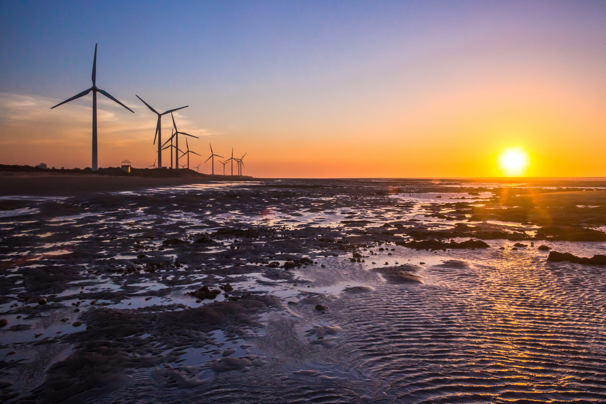

新竹-香山濕地
近幾年新竹相當熱門的網美景點「香山沙丘」，除了是國家級的重要濕地，也是濱海野生動物保護區，進入前一定要記得申請，不然可能會被罰 25 萬的罰鍰。香山溼地擁有大面積的高沙丘，也有不少比人還矮小的沙丘，相對於其他沙丘景點，這裡的路面平坦好走，趁著秋高氣爽來散步、賞夕陽也是不錯的選擇。

近幾年新竹相當熱門的網美景點「香山沙丘」，除了是國家級的重要濕地，也是濱海野生動物保護區，進入前一定要記得申請，不然可能會被罰 25 萬的罰鍰。香山溼地擁有大面積的高沙丘，也有不少比人還矮小的沙丘，相對於其他沙丘景點，這裡的路面平坦好走，趁著秋高氣爽來散步、賞夕陽也是不錯的選擇。